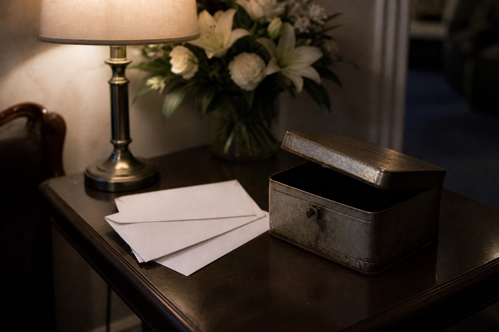

Page D iron box

No money on the altar table. Rats and ash both climb. The iron box sits on the low table in the old house’s west wing. Lid has an old split. Envelopes go in through the split.
The west wing once held basins and brooms that overflowed from Huaiji. Tonight only the box. The fire paper on the village board says do not stack paper funeral goods again. It is this room. Not another branch grown on the genealogy.
If the transcript says “money’s in the west room,” it means this box. In Dongbu that word can be a direction, and it can be a household share. At night you only split them against paper.
Principal that can be counted in the box tonight is only the envelope on page A. Page B incidentals are bound with a kraft band. They do not mix with principal.
The low table is short one leg. A brick is under it. Brick came from a Dongbu ditch. Nothing to do with a branch. Someone heard the brick as a ward. That is talk. The copy does not take it.
One grain of ash in the split. Ash is not money. I flicked it with a nail before I let Wanqiu push the envelope.
west wing